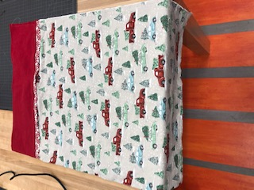

I started off week 8 by learning to embroider. I decided I wanted to embroider a headband. I learned how to put the filter paper and water restistant sheet on the headband and use the clamp machine to hold the headband. Then I put the clamp machine on the emroidery machine and pick my font and sizing and posiotining and color thread and then I print. I then learned to sew. I started off by learning how the machine works, including the pedal. I began by just seweing around a sqaure looking cloth and then just put my initials on it. I the learned how to make a pillow case. I grabbed three different fabrics. I then measured them and cut them so they were straight and are the dimmensions that I need. I then sewed around my main portion of my pillow. I then sewed the second largest one to the largest on. Then I sewed the second largest one to the third largest one. Lasty, I made a french seam and I was done.

Index